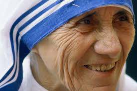

| Dates | Events |
|---|---|
| August 26, 1910 | Born in Skopje, North Macedonia. |
| 1922-1923 | First Call to Religious Life. | September 25, 1928 | Became a Roman Catholic Nun (Sister Teresa). | 1929 | Becomes a Teacher After Moving to Kolkata. | 1937 | Takes Final Vows of a Nun, Becomes Mother Teresa. | 1946 | Call to serve the poor ("call within a call"). | October 7, 1950 | Founded Missionaries of Charity. | 1957 | Begins Work with Lepers. | 1971 | Receives Pope John XXIII Peace Prize. | 1979 | Wins Nobel Peace Prize. | March, 1980 | Awarded with the Bharat Ratna. | 1982 | Rescues 37 Disabled Children. | 1985 | Receives Medal of Freedom (Highest US Honor). | September 5, 1997 | Died in Calcutta. | September 4, 2016 | Canonized as Saint Teresa of Calcutta. |